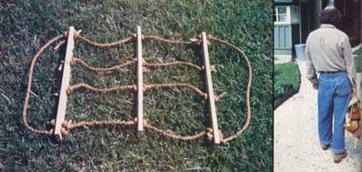

You know the story. No matter how you try to tote an armload of kindling or loose firewood . . . you always wind up wishin' you had an extra pair of hands (right up to the instant you trip over a step or try to open a door, and the whole dadratted stack of dot-nobbled chunks of wood slips out of your grasp and tumbles to the ground).
Luckily-at least for the English language-life doesn't have to be that way. Not if you have one of MOTHER's laughably simple wood carriers handy the next time you want to fill the giant log holder described above.
And is this carrier easy to build! Even if you're a real fumble-fingers, you can assemble the little jewel in only a few minutes from the kind of "junk" that most folks have lying around the house. All you need are [1] several feet of old hemp rope-nylon will do in a pinch-and [2] some scraps of lumber that are at least 1-1/2 inches wide and 5/8 inch thick.
You'll need three pieces of wood, each 22 inches long. Drill four 1/2-inch (or whatever size it takes to accommodate the grope you've chosen) holes-spaced six inches apart "on :center", with two inches left at either end of each stick-through all three pieces of the lumber. Next drill an additional two holes-slightly outboard of the four holes you've just made-in two (only two) of the spreader bars. (See the accompanying "construction" photo . . . which explains the idea better than mere words ever can.) Then sand off the splinters and stain or shellac the bars . . . or just leave 'em unfinished.
All right. Now cut four 3-foot-long lengths of stout line and tie a solid knot in one end of each. Thread the rope through the four inboard openings in one of the six-holed spreader bars and tie four more knots-one in each line-so that the wood is held securely at the end of the ropes (again, see photo). Then measure out 10-1/2 inches of line and tie four more knots.
Slip the four-holed spreader bar down the lengths of rope until it's snugged against these knots . . . and tie four knots to hold it in place. Then measure out another 10-1/2 inches of rope, tie four more knots, slip on the remaining six-holed bar, tie a final four knots to anchor it, and cut off the loose ends.
Which leaves you nothing to do but add two pieces of 3-foot-long rope (to the outboard holes of the outboard bars) for handles . . . and you've got yourself a foolproof wood carrier that didn't cost a cent, but which can save you a million dollars' worth of cussin' and dumped loads!
|
 |
|
|